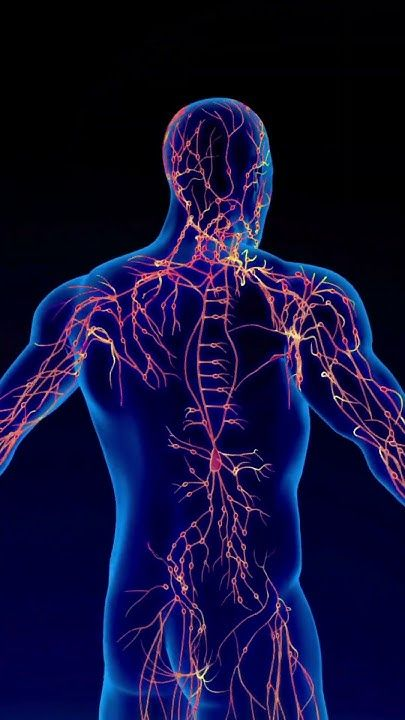
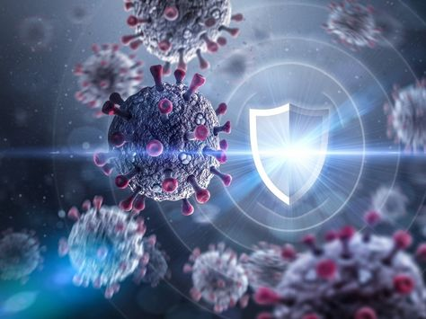
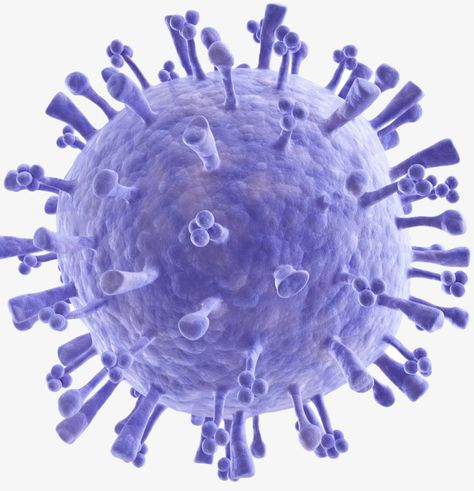

O que é o Sistema
Imunológico?
O Sistema imunológico é uma rede complexa de células, tecidos e órgãos que trabalham juntos para proteger o corpo contra infecções e doenças. Sua principal função é identificar e combater agentes invasores como vírus, bactérias, fungos e parasitas.

Componentes Principais
Células do Sistema Imunológico: Os leucócitos (glóbulos brancos) são as células chave. Existem vários tipos, como linfócitos T e B, que desempenham papéis diferentes na defesa.
Órgãos Imunológicos: Incluem a medula óssea (onde as células sanguíneas são produzidas), os linfonodos (que filtram linfa e armazenam células imunológicas), e o baço (que ajuda a filtrar o sangue).
Anticorpos: São proteínas produzidas pelos linfócitos B que reconhecem e neutralizam os agentes patogênicos.

O Corpo "Memoriza" Ameaças para Defesas Futuras
Após combater uma infecção, o sistema imunológico cria células de memória que permitem respostas rápidas e eficazes se o mesmo patógeno invadir novamente. Isso é a base da vacinação.
A Medula Óssea é a Fábrica de Células Imunológicas
A medula óssea é o principal local onde as células sanguíneas são produzidas, incluindo os leucócitos (glóbulos brancos), essenciais para o sistema imunológico. Ela está localizada no interior de ossos como o fêmur e a pelve. A medula óssea contém células-tronco hematopoéticas, que se dividem e se transformam em diferentes tipos de leucócitos, como os linfócitos T e linfócitos B, que desempenham papéis cruciais na defesa do corpo contra infecções.

Linfonodos: Postos de Controle e Filtro de Segurança
Os linfonodos filtram a linfa e armazenam células imunológicas, ajudando a detectar e combater patógenos que entram no corpo.
Anticorpos: "Armas" Personalizadas contra Patógenos
Os anticorpos, produzidos pelos linfócitos B, são proteínas que neutralizam patógenos, marcando-os para destruição pelas células do sistema imunológico.
Manter o Sistema Imunológico Saudável é Essencial
Uma alimentação balanceada, exercícios físicos e sono adequado são fundamentais para manter o sistema imunológico forte e pronto para proteger o corpo contra infecções.
{kind=link}
{kind=link}
{kind=link}
{kind=link}
{kind=link}
{kind=link}
{kind=link}
{kind=link}
{kind=link}